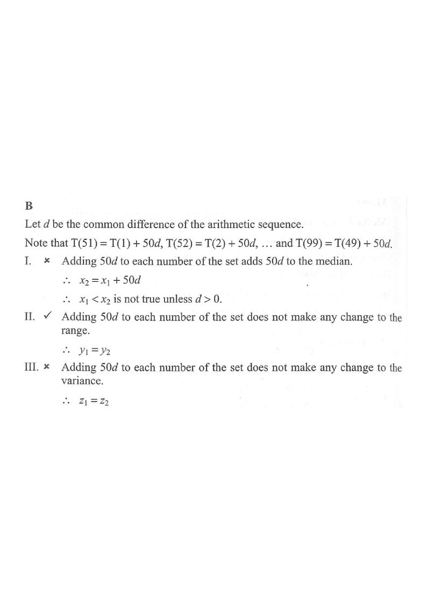

HKDSE Mathematics (Compulsory Part) · Paper 2
Statistics — Median, Range & Variance of Arithmetic Sequences
It is given that \(T(n)\) is the \(n\)th term of an arithmetic sequence. Let \(x_1\), \(y_1\) and \(z_1\) be the median, the range and the variance of the group of numbers \[ \{T(1),\,T(2),\,T(3),\,\dots,\,T(49)\} \] respectively, while \(x_2\), \(y_2\) and \(z_2\) be the median, the range and the variance of the group of numbers \[ \{T(51),\,T(52),\,T(53),\,\dots,\,T(99)\} \] respectively. Which of the following must be true?
A. I only
B. II only
C. I and III only
D. II and III only

An arithmetic sequence has the form \(T(n) = a + (n-1)d\), where \(a\) is the first term and \(d\) is the common difference.
Note that
\[ T(51) = a + 50d = T(1) + 50d \] \[ T(52) = a + 51d = T(2) + 50d \] \[\vdots\] \[ T(99) = a + 98d = T(49) + 50d \]So every term in the second set is exactly \(50d\) more than the corresponding term in the first set.
Adding \(50d\) to every number adds \(50d\) to the median:
\[ x_2 = x_1 + 50d \]For \(x_1 < x_2\) we would need \(50d > 0\), i.e. \(d > 0\). But \(d\) can be zero or negative, so \(x_1 < x_2\) is not always true.
The range depends only on the gap between the largest and smallest terms:
\[ y_1 = T(49) - T(1) = 48d \] \[ y_2 = T(99) - T(51) = 48d \]Adding the same constant \(50d\) to every datum does not change the spread, so \(y_1 = y_2\) always.
Variance measures the average squared deviation from the mean. Adding the same constant \(50d\) to every datum shifts every value and the mean together, leaving all deviations unchanged:
\[ z_2 = z_1 \]Hence \(z_1 > z_2\) is false; in fact they are equal.
Only statement II must be true.